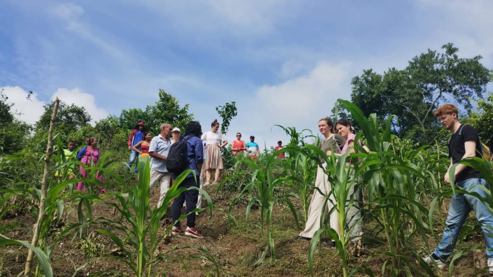
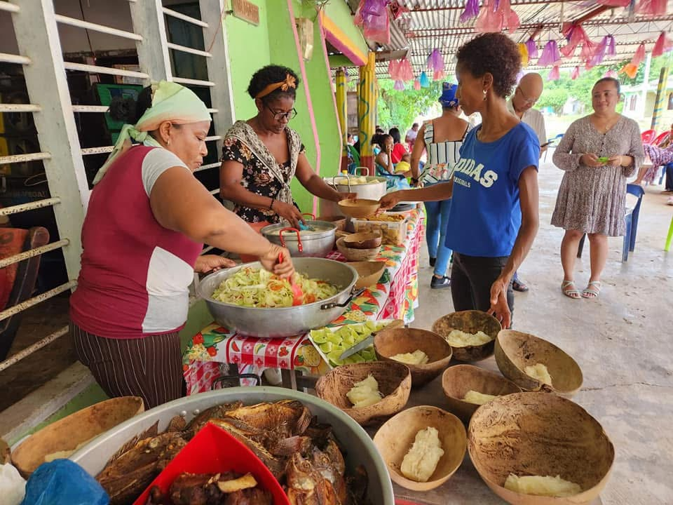
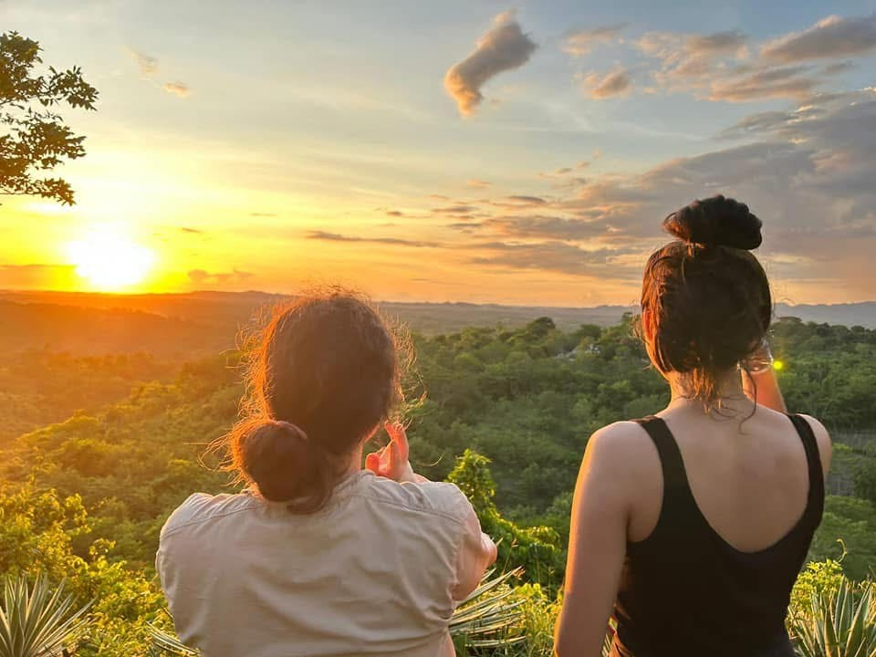
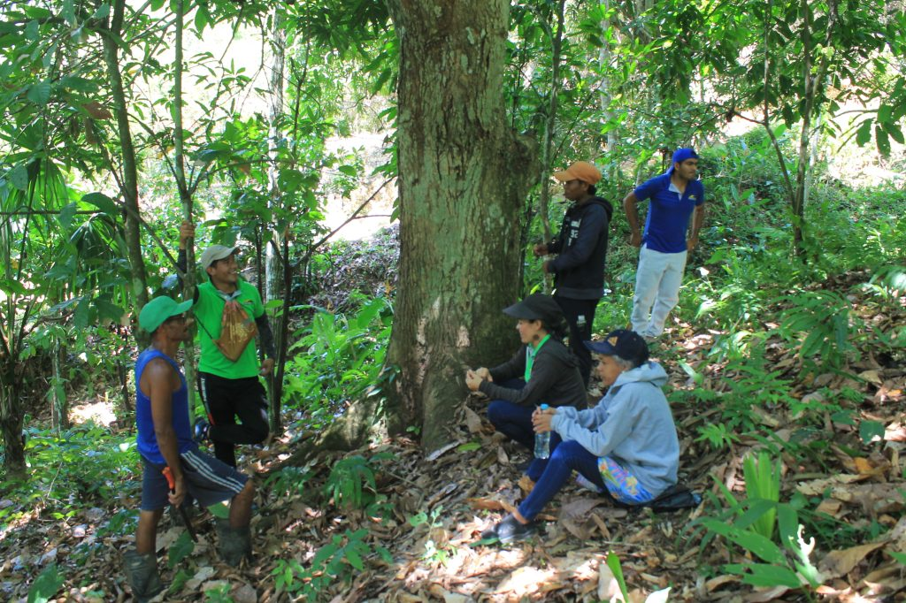

Montes de María
The Montes de María are located between the departments of Sucre and Bolívar. Historically, the region has been a farming and agro-industrial area, with its culture and traditions based on peasant crops such as corn, cassava, and yams, dual-purpose livestock farming, smaller species (poultry and pig farming), and artisanal fishing—activities in which its population has extensive experience and knowledge.
Montes de María, Colombia
Where we work
Sembrandopaz works alongside communities across seven municipalities in the departments of Sucre and Bolívar.
Morroa
Departamento de Sucre
- Comunidad de Brisas del Mar
- Comunidad de La Victoria
- Comunidad de San Pablo
- Comunidad de Pichilín
Colosó
Departamento de Sucre
- Comunidad de Salsipuedes
- Comunidad de La Florida
El Carmen de Bolívar
Departamento de Bolívar
- Comunidad de Raizal
- Comunidad de Berruguita
- Comunidad de El Bálsamo
San Jacinto
Departamento de Bolívar
- Comunidad de Brasilar
San Onofre
Departamento de Sucre
- Comunidad de La Pelona
María la Baja
Departamento de Bolívar
- Comunidad de Mampuján
Chalán
Departamento de Sucre



In the late 1990s, the presence of armed groups and the poverty in this region, caused by state abandonment, created the conditions for the escalation of the armed conflict and the beginning of a dispute between armed actors over control of strategic areas of the territory, especially the highway that connects Sincelejo with the departmental capital of Cartagena. This situation led to the Montes de María region becoming a focal point for internal displacement of its population.
In the 1990s, this area was identified as a settlement region for outlaw groups, including the FARC and AUC, among others. This brought with it countless armed actions such as massacres and mass displacements of the civilian population, increasing the levels of violence, poverty, and marginalization in the region.
However, since 2004, when the AUC demobilized, and since 2007, when the FARC’s 35th Front was dismantled, the communities in this region have gradually recovered their economy, which is largely based on agricultural productivity. However, they lack the minimum conditions for a dignified survival and guarantee that violent acts will not be repeated because it continues to be a corridor for some paramilitaries and guerrillas who remained in the area.



Despite the difficult situation of displacement and poverty in the region, in addition to the precarious socioeconomic conditions and the dynamics of the conflict, there have also been processes for return and relocation in the territory, land titling, access to land, and the availability of subsidies granted by the state in an effort to rebuild social and economic conditions that allow for greater well-being for families.
Today, the Final Peace Agreement between the government and the former FARC-EP represents an opportunity for communities to participate in the implementation of peace strategies that help improve the quality of life and coexistence of communities in this region.
It is within this context and region that Sembrandopaz works, focusing on seven community sectors, in addition to working regionally throughout the Caribbean Coast. Specifically, we work in the Alta Montaña (High Mountain) communities and districts of the municipality of El Carmen de Bolívar, such as Raizal, Caracolicito, Berruguita, Lázaro, Guamanga, Macayepo, La Pita, Cansona, and Tierra Grata, among others; as well as Brasilar in the municipality of San Jacinto Bolívar and Mampuján in the municipality of María La Baja. In the department of Sucre, we work with the communities of Brisas del Mar, La Victoria, San Pablo, Pichilín, Asmón, La Lata, Florida, and Salsipuedes, among others that have benefited from the agricultural production initiatives that Sembrandopaz has been developing in the region for 20 years.